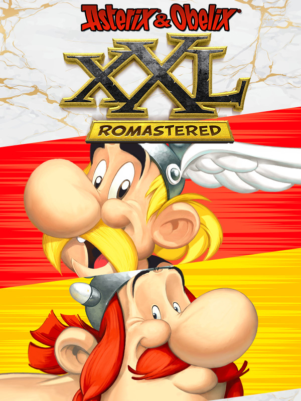

Asterix & Obelix XXL
Asterix & Obelix XXL
Details
|  | |
| Playtime | Not Played |
| Last Activity | Never |
| Added | 5/13/2025 15:31:22 |
| Modified | 5/13/2025 15:32:12 |
| Completion Status | Not Played |
| Library | Steam |
| Source | Steam |
| Platform | PC (Windows) |
| Release Date | 10/22/2020 |
| Community Score | 80 |
| Critic Score | |
| User Score | |
| Genre | Action Adventure |
| Developer | OSome Studio |
| Publisher | Microids |
| Feature | Single-Player |
| Links | GOG Steam Twitch |
| Tag | 3D 3D Platformer Action Action-Adventure Adventure Beat 'em up Cartoony Character Customization Colorful Combat Comedy Comic Book Controller Platformer Psychological Horror PvE Remake Score Attack Singleplayer Third Person |
Description
The year is 50 B.C. Gaul is entirely occupied by the Romans. Well, not entirely... One small village of indomitable Gauls still holds out against the invaders. And life is not easy for the Roman legionaries who garrison the fortified camps of Totorum, Aquarium, Laudanum and Compendium.
Peace reigns in the small Armorican village, where the villagers go about their daily business. Our two heroes, Asterix and Obelix, hunt wild boar, the blacksmith and the fishmonger quarrel, and the village chief strolls around the village square atop his shield.
After a fine day's hunting, Asterix and Obelix return to find their village in flames, pillaged by the Romans! They set off to rescue their fellow villagers, accompanied by their faithful Dogmatix. Their journey will take them to Normandy, Greece Helvetia, Egypt and, finally, Rome, in order to save the villagers from the clutches of the emperor Caesar...
Rediscover the first XXL adventure of your favorite Gauls in this fully romastered version!
Toggle between Asterix & Obelix et travel accross various regions of the world such as Greece or Egypt to set free Impedimenta, Panacea, Getafix and the other villagers.
Fight all the Romans, pirates and Vikings who will stand in your way! Nothing can stop you with magic potion.
Cherry on the boar, 4 NEW GAME MODES are available:
- Retro Mode: return to the original graphics whenever you wish, for those who are nostalgic for 50 BC!
- Course mode: collect all coins scattered around within the set time. Jump, whirl, run… and switch to Retro mode from time to time, as some coins are mischievously hidden.
- Countdown mode: get to the finishing line as fast as possible! The druids say that the best potions are brewed slowly. However, time is your enemy here, so don't dally! Take care, as a number of obstacles will stand in your way.
- Extreme mode: More numerous and tougher Romans, for maximum difficulty! Will you be up to the challenge of this mode, which only the greatest Gaulish warriors are worthy of?
Peace reigns in the small Armorican village, where the villagers go about their daily business. Our two heroes, Asterix and Obelix, hunt wild boar, the blacksmith and the fishmonger quarrel, and the village chief strolls around the village square atop his shield.
After a fine day's hunting, Asterix and Obelix return to find their village in flames, pillaged by the Romans! They set off to rescue their fellow villagers, accompanied by their faithful Dogmatix. Their journey will take them to Normandy, Greece Helvetia, Egypt and, finally, Rome, in order to save the villagers from the clutches of the emperor Caesar...
Rediscover the first XXL adventure of your favorite Gauls in this fully romastered version!
Toggle between Asterix & Obelix et travel accross various regions of the world such as Greece or Egypt to set free Impedimenta, Panacea, Getafix and the other villagers.
Fight all the Romans, pirates and Vikings who will stand in your way! Nothing can stop you with magic potion.
Cherry on the boar, 4 NEW GAME MODES are available:
- Retro Mode: return to the original graphics whenever you wish, for those who are nostalgic for 50 BC!
- Course mode: collect all coins scattered around within the set time. Jump, whirl, run… and switch to Retro mode from time to time, as some coins are mischievously hidden.
- Countdown mode: get to the finishing line as fast as possible! The druids say that the best potions are brewed slowly. However, time is your enemy here, so don't dally! Take care, as a number of obstacles will stand in your way.
- Extreme mode: More numerous and tougher Romans, for maximum difficulty! Will you be up to the challenge of this mode, which only the greatest Gaulish warriors are worthy of?